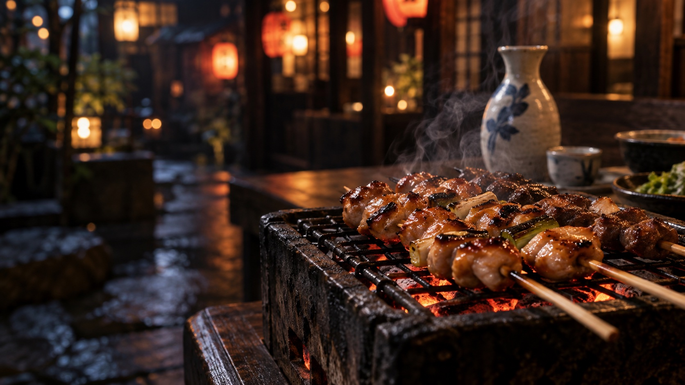

숯불 야키토리
숯불 향을 입힌 닭다리살과 대파. 한 꼬치씩 정성스럽게 구워냅니다.

CHARCOAL · SAKE · LATE NIGHTS
숯불 위에서 익어가는 꼬치, 잔에 담긴 대화.
오늘의 끝에서 만나는 작은 일본의 밤.
SIGNATURE SELECTION
숯의 향이 은은하게 밴 요리와 천천히 즐기는 한 잔. 밤의 속도를 조금 늦춰보세요.
YOUR BRAND, IN THIS STYLE
F02 · 夜空 — 이자카야 스타일
브랜드명·사진·문구는 고객님의 매장에 맞게 제작합니다.